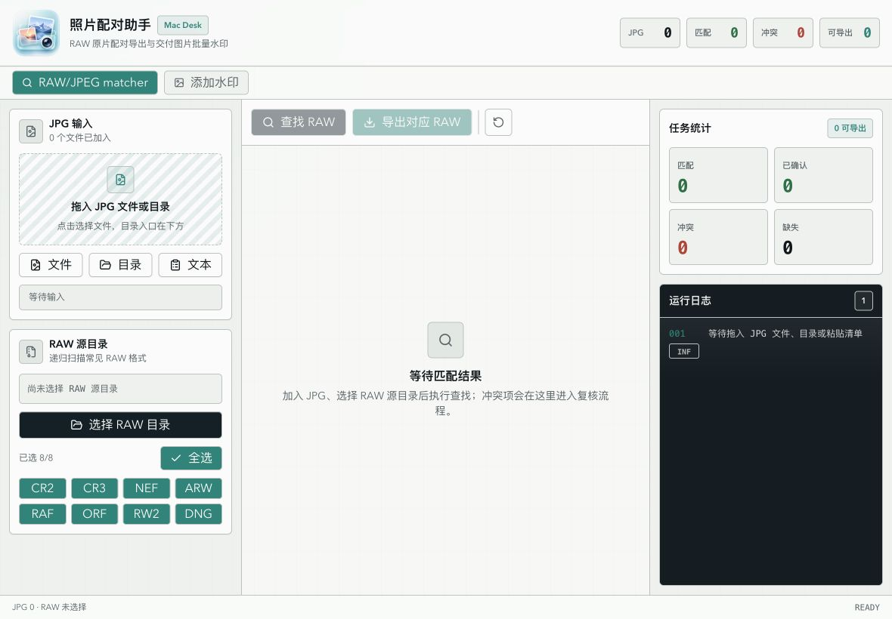
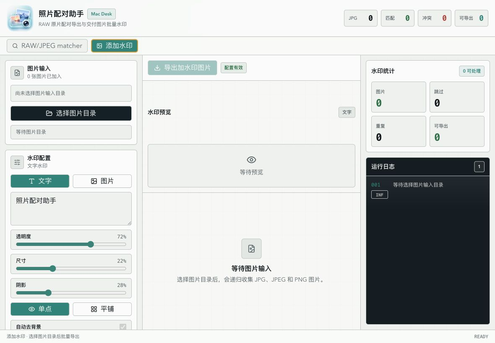
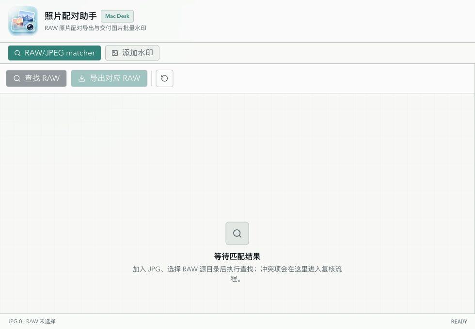

最大问题不是“丑”，而是“不像 Mac”
当前 header、tabs、cards、status tiles 叠在一起，像浏览器里的 SaaS dashboard。macOS 工具更应依赖系统菜单、工具栏、sidebar、inspector 和清晰分组。
当前版本功能完整、信息密度适合桌面工具，但视觉语言更接近 Web 管理台：边框和卡片偏重、主工作区偏窄、绿色调过于集中、macOS 菜单与快捷键体系缺席。优化目标应从“好看的网页面板”转为“原生感强、长时间处理照片也从容的 Mac 工具”。
当前 header、tabs、cards、status tiles 叠在一起，像浏览器里的 SaaS dashboard。macOS 工具更应依赖系统菜单、工具栏、sidebar、inspector 和清晰分组。
src/styles.css:50-72 使用偏绿的背景、muted、accent，再加网格背景，整体显得闷、旧、偏工程调试感。建议改成 Apple blue + graphite + semantic colors。
Tauri 最小宽度是 980，CSS 三栏断点是 1100。在 980px 时左侧输入区高度为 0，用户缩到最小窗口后无法开始任务。



证据：src-tauri/tauri.conf.json:17-20 设置 minWidth: 980，但 src/App.tsx:596-604 的三栏断点是 min-[1100px]。运行态 980px 下第一个 aside 高度为 0。建议：要么把 Tauri minWidth 提到 1100/1120，要么把小于 1100 的布局改成真正可用的两层/抽屉式 source panel。
src/App.tsx:1327-1361 header 高 88px，下面又有 44px tabs，再下面是工具栏。macOS 更推荐把主要命令放进窗口 toolbar，App 标题和大图标不要占用工作区空间。Mac Desk badge 也更像营销标签，不像生产工具。
1180px 下左右栏各 320px，主区只有 540px。对于 RAW 结果表格、缩略图、冲突复核、水印预览，主区应该是视觉重心。建议默认布局改为 280px / minmax(620px,1fr) / 280px，右侧 inspector 可折叠。
src/styles.css:50-72 的背景、muted、accent 都偏绿，加上 src/styles.css:113-124 的网格背景，界面像工程调试台。建议以 system graphite 和 Apple blue 建立主调，绿色只保留给成功状态。
src-tauri/src/lib.rs:1429-1443 只注册了 Tauri commands，没有 App/File/Edit/View/Window/Help 菜单，也没有 ⌘O、⌘R、⌘E、⌘,。这会直接削弱“Mac citizen”感。
src/App.tsx:1666-1677 用 tr onClick 处理冲突项，但表格行不是天然按钮，缺少键盘触达路径。src/App.tsx:877、src/App.tsx:2218-2224 的 textarea 缺少显式 label 或 aria-label；运行日志也建议加 aria-live="polite"。
“查找 RAW”和“导出对应 RAW”在未满足条件时直接禁用，但界面没有明确列出缺哪一步。建议将空状态改成 checklist：1. 加入 JPG，2. 选择 RAW 目录，3. 选择格式，4. 查找。
src/App.tsx:1665、src/App.tsx:1847、src/App.tsx:2054 都直接 map 渲染列表。日志上限 300 已做保护，但图片/结果列表可能很大。照片批处理工具建议超过 100 行后使用虚拟列表或分页。
选用 Minimalist / Refined + Pro Utility，不要继续叠卡片和装饰网格。差异化锚点应是“照片任务工作台”：中间是大画布/结果表，左侧是 source list，右侧是 inspector 和日志。
优先遵守 macOS：系统字体、标准菜单、键盘快捷键、可调整窗口、侧栏和工具栏。Liquid Glass 或半透明材质只用于 chrome 层，不用于表格和内容层。
当前绿色适合作为“成功/已匹配”，不适合作为全局主色。建议将主操作色改为 Apple blue，保留少量 teal 作为品牌辅助色。
:root {
--background: #f5f5f7;
--card: #ffffff;
--foreground: #1d1d1f;
--muted-foreground: #6e6e73;
--border: rgba(60, 60, 67, 0.18);
--primary: #1d1d1f;
--accent: #0a84ff;
--success: #34c759;
--warning: #ff9f0a;
--destructive: #ff3b30;
}| 区域 | 当前问题 | 建议改法 |
|---|---|---|
| 顶部 chrome | 88px header + 44px tabs + toolbar，垂直空间消耗过多。 | 合并为 52-60px macOS toolbar；工作区切换用 segmented control；统计指标缩成右侧 status capsule。 |
| 左侧输入区 | 当前是卡片堆叠，小窗口下会坍缩。 | 改为稳定 sidebar/source list；低于 1100px 时变成可打开的 source drawer，不要依赖 0 高度 scroll area。 |
| 中间主区 | 1180px 时只有约 540px，视觉重心不够。 | 主区至少 620px；结果表加 sticky header、可筛选 chips；水印页让预览占据 60% 以上高度。 |
| 右侧 inspector | 日志黑色面板视觉权重过高。 | 统计和日志做成 inspector sections；日志默认收起或降低对比，错误/警告时再提升权重。 |
建立统一 command model：chooseJpeg、chooseRawRoot、match、export、clear。菜单、快捷键、toolbar 都调用同一组命令。
⌘O 加入 JPG，⇧⌘O 选择 RAW 目录，⌘R 查找，⌘E 导出，⌘K 命令面板，⌘, 设置。
把“等待匹配结果”改成任务 checklist，并对禁用按钮显示原因。例如“还差 RAW 源目录”而不是只灰掉按钮。
冲突行不要只靠整行点击。增加明确的“复核”按钮、键盘焦点、候选预览和差异信息，减少误点。
| 组件 | 优化重点 |
|---|---|
| Button | 当前按钮质感不错，但默认黑色主按钮过重。建议主按钮只用于最高优先级动作，普通工具按钮使用 macOS toolbar item 风格。 |
| Pane/Card | Pane 卡片边框过密。macOS 侧栏更适合 section header + inset grouped controls，减少每块卡片的独立边框。 |
| Badge | 状态 badge 已有语义，但 Mac Desk 属于噪音；建议替换为版本/模式信息或移除。 |
| Table | 表格可加 sticky header、行选择态、键盘导航、虚拟滚动；冲突状态不要只靠红色背景，需增加图标和操作按钮。 |
| LogPanel | 保留专业感，但减少终端黑块面积。错误日志可使用系统 red/orange，普通 info 不需要强对比。 |
立即处理 minWidth 980 与 min-[1100px] 的冲突。建议短期把 Tauri 最小宽度调到 1120；中期实现小宽度 drawer 布局。
删除或弱化 .desk-grid，改用 macOS system surfaces。将全局 accent 从 teal 改为 Apple blue，green 仅用于成功。
缩短 header，合并 workspace tabs 和 toolbar。把大图标从工作区 header 移除，保留在 app icon/dock 中承担品牌。
在 Tauri builder 中创建标准菜单，把核心命令接入菜单项和快捷键。Settings 放到 App menu，Help 至少提供本地帮助窗口。
修复 tr onClick、textarea label、日志 aria-live、虚拟列表、减少 motion 设置，完成 Web Guidelines 基线。
截图在 1180×820 下主工作区明显成为视觉重心；背景不再偏绿灰；按钮、分隔、字体接近 macOS 系统工具，而不是 Web 卡片页。
用户只用键盘可以完成加入、选择、查找、复核、导出；缩到最小窗口也不会丢失输入区；每个禁用主按钮都有可见原因。